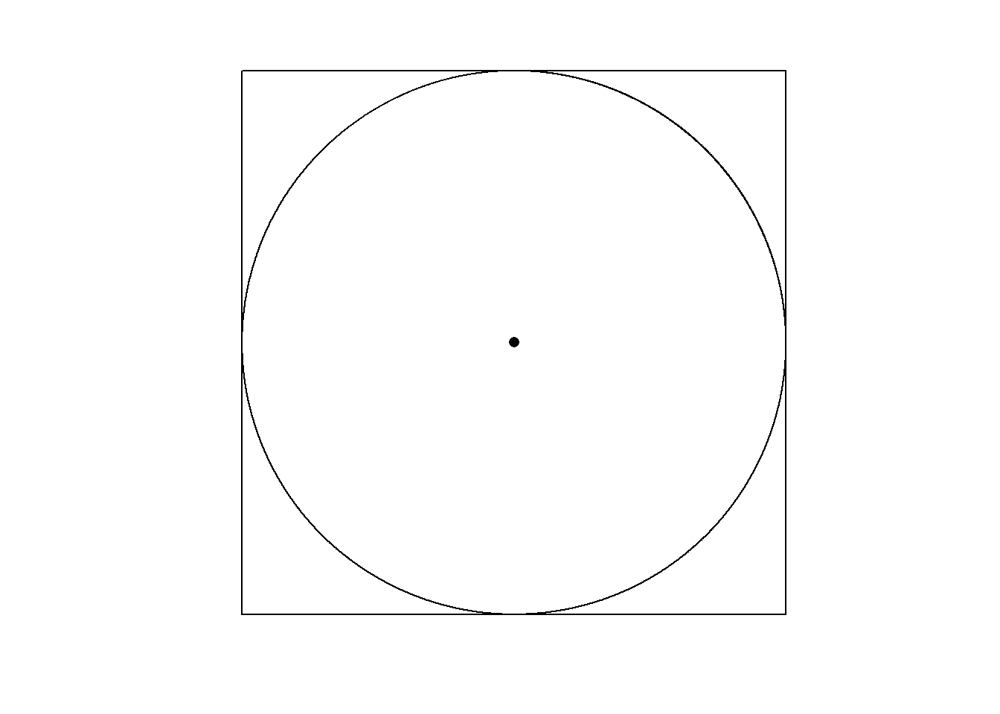

Día π
geom_point

El 14 de marzo se celebra el día de
Una manera de aproximar su valor es mediante puntos ubicados aleatoriamente sobre un cuadrado, que posee un círculo inscrito, como se muestra a continuación:
La proporción de puntos dentro del círculo respecto del total se acerca a la cuarta parte de
\[ \lim_{n \to \infty} \frac{t}{n} = \frac{\pi}{4} \]
Siendo \(n\) como la cantidad total de puntos y \(t\) aquellos que se encuentran dentro del círculo.
El script muestra como un aumento progresivo de \(n\) resulta en un acercamiento al valor de
Paquetes
Ocultar código
library(glue)
library(showtext)
library(ggtext)
library(tidyverse)Función
Genera un tibble a partir de la cantidad de puntos dada (\(n\)).
Ocultar código
f_pi <- function(z) {
set.seed(2025)
d <- tibble(
x = runif(n = z, min = -1, max = 1),
y = runif(n = z, min = -1, max = 1),
r = sqrt(x^2 + y^2),
estado = if_else(r <= 1, "in", "out"),
grupo = paste0("p", format(z, scientific = FALSE))
)
return(d)
}Colores y fuentes
Ocultar código
c1 <- "#E88934"
c2 <- "#1E466E"
c3 <- "grey60"
c4 <- "black"
c5 <- "#637B31"
c6 <- "#208CC0"
c7 <- "#7528AF"
c8 <- "grey90"Fuentes: Ubuntu y JetBrains Mono.
Ocultar código
font_add(
family = "ubuntu",
regular = "./fuente/Ubuntu-Regular.ttf",
bold = "./fuente/Ubuntu-Bold.ttf",
italic = "./fuente/Ubuntu-Italic.ttf"
)
# monoespacio & íconos
font_add(
family = "jet",
regular = "./fuente/JetBrainsMonoNLNerdFontMono-Regular.ttf"
)
showtext_auto()
showtext_opts(dpi = 300)Epígrafe
Ocultar código
autor <- glue("<span style='color:{c2};'>**Víctor Gauto**</span>")
icon_twitter <- glue("<span style='font-family:jet;'></span>")
icon_instagram <- glue("<span style='font-family:jet;'></span>")
icon_github <- glue("<span style='font-family:jet;'></span>")
icon_mastodon <- glue("<span style='font-family:jet;'>󰫑</span>")
icon_bsky <- glue("<span style='font-family:jet;'></span>")
usuario <- glue("<span style='color:{c2};'>**vhgauto**</span>")
sep <- glue("**|**")
mi_caption <- glue(
"{autor} {sep} {icon_github} {icon_twitter} {icon_instagram} ",
"{icon_mastodon} {icon_bsky} {usuario}"
)Datos
Símbolos útiles
Ocultar código
pi_etq <- ""
punto_etq <- ""
sep_etq <- glue(" <b style='color: {c3}'>|</b> ")Genero una única base de datos, agrupados por la cantidad de puntos (\(n\)). Agrego el título de cada panel.
Ocultar código
d <- map(c(1e3, 1e4, 1e5, 1e6), f_pi) |>
list_rbind() |>
mutate(
grupo = fct_inorder(grupo)
)
titulo_tbl <- d |>
reframe(
pi_aprox = sum(estado == "in")/n()*4,
.by = grupo
) |>
mutate(
prob = round(abs((pi_aprox - pi)/pi*100), 3),
.by = grupo
) |>
mutate(
p = as.numeric(sub("p", "", grupo))
) |>
mutate(
etq1 = paste0(
format(
p, big.mark = ".", decimal.mark = ",", scientific = FALSE, trim = TRUE
),
punto_etq),
etq2 = paste0(
pi_etq, " ≈ ",
format(
round(pi_aprox, 5),
nsmall = 5, big.mark = ".", decimal.mark = ",", trim = TRUE
)
),
etq3 = paste0(
format(
round(prob, 3),
nsmall = 3, big.mark = "", decimal.mark = ",", trim = TRUE
),
"%"
)
) |>
mutate(
etq1 = glue("<span style='color: {c5}'>{etq1}</span>"),
etq2 = glue("<span style='color: {c6}'>{etq2}</span>"),
etq3 = glue("<span style='color: {c7}'>{etq3}</span>")
) |>
mutate(
etq = glue("{etq1}{sep_etq}{etq2}{sep_etq}{etq3}")
)
strip_titulo <- set_names(
x = titulo_tbl$etq,
nm = titulo_tbl$grupo
)Figura
El título es una expresión en LaTeX.
Ocultar código
eq <- latex2exp::TeX(r"($\lim_{n\to\infty} \frac{t}{n} = \frac{\pi}{4} $)")Subtítulo y figura.
Ocultar código
mi_subtitulo <- glue(
"*t* es el número de <b style='color: {c1}'>puntos dentro del círculo</b> y
<span style='color: {c5}'>*n* es el total</span>,
aleatoriamente ubicados.<br>
Para cada panel se indican <b style='color: {c5}'>n</b>, el
<b style='color: {c6}'>valor aproximado de
<span style='font-family: jet'>{pi_etq}</span></b>
y el <b style='color: {c7}'>error porcentual</b>."
)
g <- ggplot(d, aes(x, y, color = estado)) +
geom_point(
size = .1, alpha = .5, show.legend = FALSE
) +
facet_wrap(vars(grupo), ncol = 2,
labeller = as_labeller(strip_titulo)
) +
scale_color_manual(
breaks = c("in", "out"),
values = c(c1, c2)
) +
coord_equal(clip = "off", expand = FALSE) +
labs(
title = eq, subtitle = mi_subtitulo, caption = mi_caption
) +
theme_void() +
theme(
plot.background = element_rect(fill = c8, color = NA),
plot.margin = margin(r = 15, l = 15),
plot.title = element_text(
family = "sans serif", size = 40, hjust = .5, margin = margin(t = 20),
color = c2
),
plot.subtitle = element_markdown(
size = 22, hjust = .5, margin = margin(t = 15, b = 25), lineheight = 1.4
),
plot.caption = element_markdown(
family = "ubuntu", color = c1, size = 15, margin = margin(t = 20, b = 15)
),
panel.spacing.x = unit(1, "cm"),
strip.text = element_markdown(
family = "jet", size = 15, margin = margin(t = 10, b = 5), color = c4
)
)Guardo la figura creada.
Ocultar código
ggsave(
plot = g,
filename = paste0(getwd(), "/viz/pi.png"),
width = 30,
height = 37,
units = "cm"
)